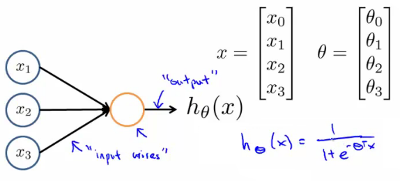

Very simple model of a neuron's computation.
Often good to include an x0 input - the bias unit
This is equal to 1
This is an artificial neurone with a sigmoid (logistic) activation function
Ɵ vector may also be called the weights of a model
The following diagram is a single neurone:
